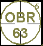
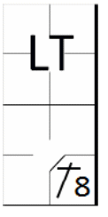
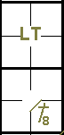
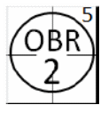
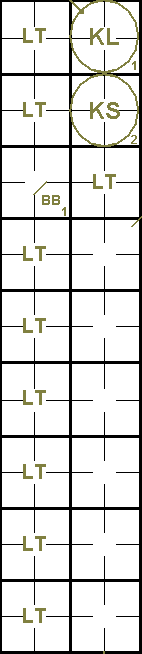

action { batter -> OBR5-63 }

Lorsqu'un frappeur ne se présente pas au marbre et qu'un autre frappeur dans l'ordre de passage au bâton termine son tour, ce frappeur est considéré comme ayant frappé hors de son tour, et l'équipe adverse est en droit de faire appel. Il convient de noter que si l'équipe adverse ne fait pas appel, le frappeur initialement considéré comme hors de son tour devient un frappeur valide et le résultat de son passage au bâton est validé [OBR 6.03(b)].
Chaque fois qu'un frappeur non conforme se présente dans la zone de frappe, les conséquences suivantes sont possibles:
Personne ne le remarque, auquel cas, quel que soit le résultat du tour au bâton, après une action, une tentative d'action ou le premier lancer effectué au frappeur suivant, le frappeur inapproprié devient le frappeur approprié.
L'équipe offensive se rend compte de l'erreur alors que le mauvais frappeur est dans la zone de frappe, et envoie donc le bon frappeur prendre sa place. [OBR 6.03(b)(2)].
Après que le frappeur fautif a terminé son tour au bâton, l'équipe adverse fait appel avant le premier lancer au frappeur suivant ; le frappeur fautif est alors déclaré éliminé et le frappeur suivant est celui dont le nom suit celui du frappeur fautif qui a été éliminé. [OBR6.03(b)(3)].
Le fait de frapper hors tour est noté sur la feuille de scorage avec le code « OBR - 5 » dans le cas où l'appel est retenu et « LT » (Lost Turn) dans le cas où l'incident est passé inaperçu.
Il convient de noter que, quel que soit le résultat du passage au bâton du frappeur inapproprié, le scoreur doit attendre tout autre développement avant d'inscrire l'action sur la feuille de scorage, car il est impossible de savoir jusqu'à ce moment qui sera considéré comme le frappeur approprié.
NOTE: Si l’arbitre ou le scoreur officiel constate qu’un frappeur non autorisé se trouve dans la zone de frappe, il ne doit en aucun cas le signaler à la défense ; il appartient à l’équipe en défense de se rendre compte de l’erreur et d’agir en conséquence.
Nous allons maintenant examiner les différentes situations de frappe hors tour et leurs conséquences.:
Un mauvais batteur qui devient coureur. Si un frappeur non autorisé devient coureur et que, suite à une réclamation de l'équipe adverse, le frappeur autorisé est retiré, ce dernier se voit créditer un tour au bâton, le retrait est attribué au receveur et toutes les autres actions survenues après que le frappeur non autorisé a atteint le premier but sont ignorées;
Batteur inadéquat qui est éliminé. Si un frappeur non réglementaire est retiré et que, suite à un appel de l'équipe adverse, le frappeur réglementaire est également retiré, ce dernier se voit créditer d'un tour au bâton. Le retrait et les assistances éventuelles sont attribués aux joueurs de champ ayant effectué le retrait lors de l'action annulée par l'appel;
Batteur inadéquat qui n'a pas été éliminé ou qui n'a pas encore frappé. Si un frappeur non autorisé se trouve dans la zone de frappe et que, avant qu'il ait terminé son tour au bâton, l'équipe offensive se rend compte de l'erreur ou que la défense fait appel, le frappeur autorisé prendra sa place et héritera du nombre de balles et de prises déjà accumulées par le frappeur non autorisé;
Frappeur irrégulier qui devient coureur ou qui est éliminé, et appel interjeté après le premier lancer au frappeur suivant. Si un frappeur irrégulier devient coureur ou est éliminé, et que la défense ne fait appel qu'après le premier lancer au frappeur suivant, l'appel est rejeté, le frappeur irrégulier devient le frappeur régulier et le résultat de son passage au bâton est validé.
NOTE: Si, alors qu'un frappeur non autorisé se trouve dans la zone de frappe, un coureur avance sur un vol de base, un faux départ, un lancer fou, une balle passée ou une erreur de champ, son avance est légale ; elle ne sera donc pas annulée par les résultats d'éventuels appels ultérieurs.
Le frappeur suivant après un frappeur hors tour est déterminé par les deux critères suivants:
Lorsque le frappeur légal est éliminé parce qu'il n'a pas frappé à son tour, le frappeur suivant est celui qui le suit immédiatement dans l'ordre de frappe.
Lorsqu'un frappeur initialement non autorisé devient le frappeur autorisé suite à l'absence d'appel ou à un appel tardif, le frappeur suivant est celui dont le nom suit celui du frappeur initialement non autorisé, devenu le frappeur autorisé. On constate donc que lorsque l'action du frappeur non autorisé est régularisée, l'ordre de passage au bâton reprend, omettant non seulement le frappeur qui n'a pas frappé à son tour, mais aussi tous les autres frappeurs qui se trouvaient dans l'alignement entre lui et le frappeur désormais autorisé.
NOTE: Si, après un ou plusieurs passages au bâton irréguliers non contestés, le frappeur qui devrait frapper est sur les bases, il saute un tour au bâton et le frappeur suivant dans l'ordre de frappe devient le frappeur approprié.
Pour illustrer les différentes situations qui peuvent survenir lorsqu'on frappe hors de son tour, prenons l'exemple d'un ordre de passage au bâton comme suit :
| 1 - Abel | 4 - Daniel | 7 - George |
| 2 - Baker | 5 - Edward | 8 - Hooker |
| 3 - Charles | 6 - Frank | 9 - Irwin |
Exemple 27:
Abel est le frappeur légal, mais Baker se présente au bâton et est éliminé par le joueur de première base grâce
à une assistance du joueur d'arrêt-court.
La défense proteste avant même le premier lancer au frappeur suivant et l'arbitre déclare Abel éliminé. Baker
retourne au bâton après Abel.
| WBSC | Transcription dans l'outil de scorage | Outil |
|---|---|---|
|
|
/* Abel est éliminé pour avoir manqué son tour au bâton. */ action { batter -> OBR5-63 } |
 |
On score un passage au bâton pour Abel et il est automatiquement retiré en vertu de la règle 5. L'arrêt-court obtient une assistance et le joueur de premier but est retiré.
Exemple 28:
Frank est le frappeur légal, mais Hooker se présente au marbre et frappe un double au champ droit. Il est retiré
en tentant d'avancer sur la troisième base par le joueur de troisième base, aidé par le défenseur du champ droit et le défenseur
de la deuxième base.
La défense proteste avant le premier lancer au frappeur suivant et l'arbitre déclare Frank éliminé. George prend
la relève au bâton. Frank bénéficie d'un tour de batte et est automatiquement éliminé selon la règle 5.
Créditez le défenseur de la deuxième base et le défenseur du champ droit pour leurs passes décisives et le défenseur
de la troisième base pour un retrait.
| WBSC | Transcription dans l'outil de scorage | Outil |
|---|---|---|

|
/* Franck est éliminé pour avoir manqué son tour au bâton */ action { batter -> OBR5-945 } |

|
Exemple 29:
Daniel est le frappeur légal, mais Edward va au bâton et réussit un simple.
Frank se présente ensuite au bâton et, alors que le compte est d'une balle et d'une prise, la défense fait appel.
L'arbitre rejete l'appel de la défense après le premier lancer effectué au frappeur suivant. Frank est donc
devenu le frappeur désigné dès que le premier lancer lui a été adressé.
Attribuez un « LT » (Lost Turn) à Daniel sans qu'il ait eu un tour au bâton ou une apparition au marbre, et
créditez Edward du coup sûr.
| WBSC | Transcription dans l'outil de scorage | Outil |
|---|---|---|
|
 |
/* Daniel rate son tour au bâton. */ action { batter -> LT } /* Frank frappe un simple au champ centre. */ action { batter -> 1B8 } |
 |
Exemple 30:
Frank est le frappeur légal, mais Hooker se présente au bâton et atteint la deuxième base suite à une erreur du
défenseur du champ droit.
La défense proteste avant même que le premier lancer ne soit effectué au frappeur suivant et l'arbitre déclare
éliminé.
George se présente au bâton après Frank. Frank bénéficie d'un tour de bâton et est automatiquement retiré selon
la règle 5. Le retrait est attribué au receveur et l'erreur commise par le défenseur du champ droit est ignorée. Après
George, Hooker frappera à son tour.
| WBSC | Transcription dans l'outil de scorage | Outil |
|---|---|---|
|
 |
/* Franck est éliminé pour avoir manqué son tour au bâton. */ action { batter -> OBR5-2 } |

|
Exemple 31: Irwin est le frappeur légal, mais c'est Abel qui se présente au bâton. À deux balles et une prise, l'équipe offensive réalise son erreur et en informe l'arbitre. Irwin reprend sa place au marbre et se retrouve avec deux balles et une prise. L'équipe offensive ayant constaté l'erreur avant la fin de son tour au bâton, la situation revient à la normale et la suite des événements est parfaitement transparente au niveau du score.
Exemple 32: Charles, en tant que frappeur légal, prend son tour au bâton et atteint le premier but sur balles. Abel (frappeur remplaçant) et Baker prennent ensuite le bâton et sont tous deux retirés sur trois prises. Une fois le premier lancer effectué face à Baker, la situation d'Abel devient légale. À ce moment-là, Charles aurait dû prendre le bâton, mais comme il est toujours en première base, il n'est pas remplacé et Daniel devient le frappeur titulaire.
| WBSC | Transcription dans l'outil de scorage | Outil |
|---|---|---|

|
/* Le batteur a perdu son tour */ action { batter -> LT } /* Le batteur a perdu son tour */ action { batter -> LT } /* Le frappeur avance sur « base sur balle » */ action { batter -> BB } /* Le batteur a perdu son tour */ action { batter -> LT } /* Le batteur a perdu son tour */ action { batter -> LT } /* Le batteur a perdu son tour */ action { batter -> LT } /* Le batteur a perdu son tour */ action { batter -> LT } /* Le batteur a perdu son tour */ action { batter -> LT } /* Le batteur a perdu son tour */ action { batter -> LT } /* Retrait sur trois prises (look) */ action { batter -> KL } /* Retrait sur trois prises (swing) */ action { batter -> KS } /* Le batteur a perdu son tour */ action { batter -> LT } |
 |